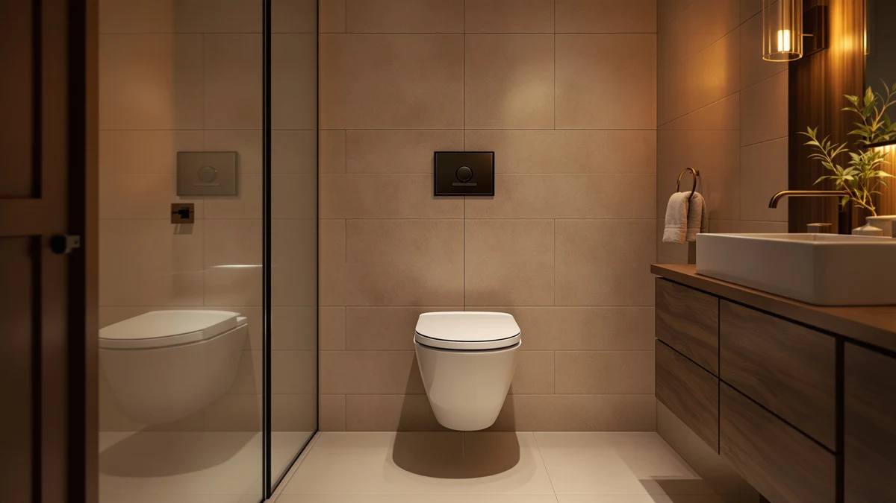

Quick Answer
This Plexon Soft Cushioned Toilet Seat review focuses on the $51.95 round seat and how its vinyl-over-wood cushioning and slow-close hinge compare with a second Plexon listing and two raised alternatives from Kohler and Carex. Choose it if you want a softer seating surface on a standard round bowl without paying for the added height a riser provides.
Our pick: Plexon Soft Cushioned Toilet Seat, $51.95 Check Price on Amazon
Bottom line: our top pick is the Plexon Soft Cushioned Toilet Seat at $51.95.
Things to Know Before You Buy
- The Plexon Soft Cushioned Toilet Seat costs $51.95 and ships in the round shape only, so confirm your bowl shape before ordering.
- The seating surface is soft cushioned vinyl over a wooden core, not the firmer molded plastic used on most slow-close seats on this site.
- Plexon sells a second listing of the same seat at the same $51.95 price, with quick-release hinges called out specifically for tool-free cleaning.
- Neither Plexon listing publishes a star rating or review count, so we compared both on material, price and feature claims rather than aggregate scores.
- If you need extra seat height rather than extra cushioning, the Kohler Hyten and Carex E-Z Lock alternatives below add 3 and 5 inches respectively.
This Plexon soft cushioned toilet seat review compares the $51.95 round seat's vinyl-over-wood cushioning, slow-close hinge and quick-release hardware against a second Plexon listing and two raised alternatives from Kohler and Carex. Plexon markets the seat on comfort, not added height. It pairs a padded vinyl surface with a wooden core that's meant to outlast a single-material plastic seat. We went through its published features, current Amazon pricing and the details Plexon lists for a near-identical second ASIN to see where the two listings actually differ and how both stack up against the Kohler and Carex alternatives covered later in this guide.
If a softer seat is your main goal and you have a standard round bowl, the Plexon Soft Cushioned Toilet Seat is the model we point to first between the two options reviewed here. At $51.95, it costs about the same as the second Plexon listing and roughly matches the Kohler Hyten, undercutting the Carex E-Z Lock by less than two dollars, so price alone will not decide this one for most buyers. The decision comes down to what problem you are solving: cushioning on your current seat height, or added height from a toilet seat riser like the Carex or Kohler models compared below.
Why You Should Trust Us
Ilane Tall covers bathroom hardware for Best Toilet Seats, and this Plexon Soft Cushioned Toilet Seat review followed the same process used across the site: comparing manufacturer specifications, current Amazon pricing and the feature claims Plexon publishes for each listing, rather than running our own lab tests. We do not own a testing facility, so each claim below traces back to the published listing, current pricing or a documented spec we can point to directly. Where Plexon does not publish a rating or review count, we say so instead of guessing, because a review that hides its sourcing is not useful to anyone comparing cushioned seats before a purchase.
Our Research Experience
We did not install or sit on the Plexon Soft Cushioned Toilet Seat ourselves. Instead, we researched its published specifications across both Amazon listings, tracked current pricing and compared its stated features against the Kohler and Carex alternatives covered in this review. That approach lets us point out where the two Plexon ASINs actually differ, such as the quick-release hinge called out on one listing but not the other, without inventing a lived-in story we cannot back up with a source. We looked specifically at what Plexon's own listing says about the cushioned surface and wooden core, since no rating or review count is published for either ASIN, and skipped speculating about comfort or durability where the documentation does not go. For this Plexon Soft Cushioned Toilet Seat review to be useful, it needs to rely on what is actually published and priced right now rather than a claim we cannot verify, and that is the standard we held this piece to throughout.
Overview & Specs

Plexon Soft Cushioned Toilet Seat
What we like
- Soft cushioned vinyl surface over a wooden core instead of firm molded plastic
- Slow-close lid and seat reduce slamming and noise
- Universal round fit works with Kohler, American Standard, TOTO and other major bowl brands
Flaws but not dealbreakers
- No published star rating or review count to check before buying
- Ships in round shape only, so it will not fit an elongated bowl
| Material | Plastic / wood |
| Size | Round |
Plexon builds this seat around comfort, not hardware. It combines a soft cushioned vinyl surface with a wooden core underneath instead of the single-material molded plastic used on most budget round seats. The slow-close lid and seat lower quietly instead of slamming shut, and Plexon notes the hinges allow quick removal for cleaning or replacement. At $51.95, the round seat sits close in price to the Kohler Hyten and slightly above the Carex E-Z Lock covered later in this Plexon Soft Cushioned Toilet Seat review, though none of those three solve exactly the same problem.
Because Plexon does not publish a rating or review count for this listing, we compared it mainly on material, fit and published features rather than aggregate scores, the same approach we take whenever a toilet seat listing omits that data. The universal round fit is the detail most likely to matter before you buy, since Plexon lists compatibility with Kohler, American Standard and TOTO bowls but nothing outside the round shape. Checking current Amazon pricing before you order is worth the extra minute, since affiliate listings like this one can shift by a few dollars between the time we publish this review and the day you actually buy.
What We Liked
The clearest strength in this Plexon Soft Cushioned Toilet Seat review is the cushioned vinyl surface itself. Combining a padded top with a wooden core is a different approach than the molded plastic most round seats in this price range use, and it's the detail that separates the Plexon from a plain hardware-store replacement. The slow-close lid and seat are the other feature worth noting, since a seat that lowers quietly on its own tends to hold up better over time than one that gets slammed shut repeatedly. The universal round fit is broad enough to cover Kohler, American Standard and TOTO bowls by Plexon's own listing, which removes most of the guesswork buyers face when replacing a round seat without knowing the original bowl brand. Because the second Plexon ASIN specifically calls out quick-release hinges, buyers who want tool-free removal for cleaning have a documented reason to pick that listing over this one at the identical $51.95 price.
What Could Be Better
The most notable gap in this Plexon Soft Cushioned Toilet Seat review is the missing rating and review count on both Plexon listings, which leaves buyers without the kind of verified feedback we can point to on more established seats. The round-only shape is a real limitation too. If your bowl is elongated, which covers most modern US toilets, neither Plexon ASIN will fit and you will need to look elsewhere, including the Plexon Elongated Soft-Close seat the brand sells separately. Plexon also does not publish a weight limit or a specific hinge mechanism beyond calling it slow-close, so buyers comparing hardware details against the Kohler Hyten's documented Grip-Tight installation will find less published detail here. Anyone who wants added seat height along with cushioning should also note that this is a flat replacement seat, not a riser, so it will not solve a mobility problem the way the Carex E-Z Lock does.
Who Is It For?
The Plexon Soft Cushioned Toilet Seat makes the most sense for anyone with a standard round bowl who wants a softer seating surface without changing anything else about their bathroom. It suits a primary bathroom where comfort matters more than added height, and where a quiet, slow-close hinge is worth paying slightly more for than a basic plastic seat. Buyers who specifically want tool-free hinge removal for cleaning should default to the second Plexon listing instead, since that is the one where quick-release hardware is explicitly documented. If you need extra seat height for mobility or recovery reasons rather than cushioning, the raised seat options built for that purpose will serve you better than either Plexon listing, including the Kohler Hyten and Carex E-Z Lock compared next in this Plexon Soft Cushioned Toilet Seat review.
Alternatives to Consider
If your bowl is elongated, you want documented tool-free hinges, or you need added seat height instead of cushioning, these three alternatives cover the most common reasons buyers look past the round Plexon seat reviewed above.
Also Great
Plexon Soft Cushioned Toilet Seat
This second Plexon listing shares the same vinyl-over-wood cushioning and slow-close lid as the seat reviewed above, at the identical $51.95 price, but its description specifically calls out quick-release hinges for tool-free cleaning.
$51.95
Check Price on Amazon
Premium Choice
KOHLER 25876-0 Hyten 3" Height
The Kohler Hyten trades cushioning for 3 inches of added height, using Grip-Tight installation hardware and a quick-release hinge, which makes it the better pick if mobility matters more than a softer seating surface.
$53.55
Check Price on Amazon
Best Value
Carex E-Z Lock Toilet Seat
The Carex E-Z Lock adds a full 5 inches of height with padded grip handles built in, aimed at seniors and post-surgical users rather than the everyday comfort upgrade the Plexon seats are built around.
$50.10
Check Price on AmazonFrequently Asked Questions
Final Verdict
This Plexon Soft Cushioned Toilet Seat review comes down to whether cushioning or height is the problem you are solving. At $51.95, the round Plexon seat delivers a softer vinyl-over-wood surface and a slow-close hinge that plain plastic seats in this price range do not match, and the second Plexon listing is worth choosing instead if documented quick-release hinges matter more to you than anything else. If you need added seat height rather than cushioning, the Kohler Hyten or Carex E-Z Lock compared above will serve you better than either Plexon listing. For a standard round bowl and a comfort upgrade, Plexon remains the seat we point to first.